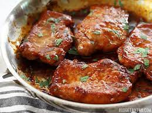

Porck Chop Recipie

Porck Chops: A Perfect Blend of Sweet and Savory
Ingredients
- Pork chop
- OLive oil
- Salt
- Pepper
Steps to Make
- Preheat oven
- Pat pork chops dry with paper towels
- Rub pork chops with olive oil, season both sides with salt and pepper
- Heat a skillet over high heat. Once hot, add a bit of oil to the skillet
- Place pork chops over the skillet and sear each side for 3 - 4 minutes
- Transfer pork chops to a baking dish
- Bake epork chops for about 10 - 15 minutes
- Remove pork chops from oven and let them rest before serving